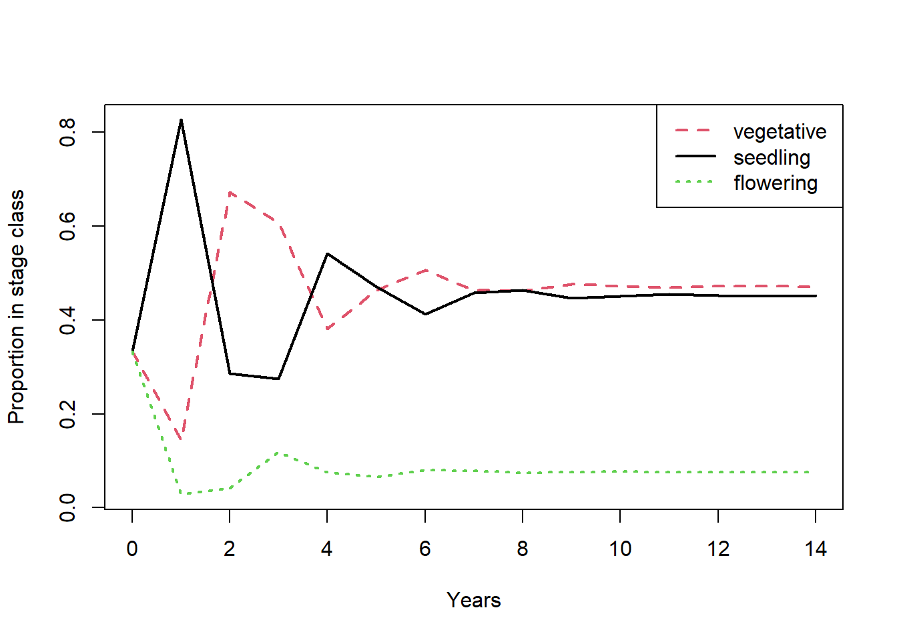
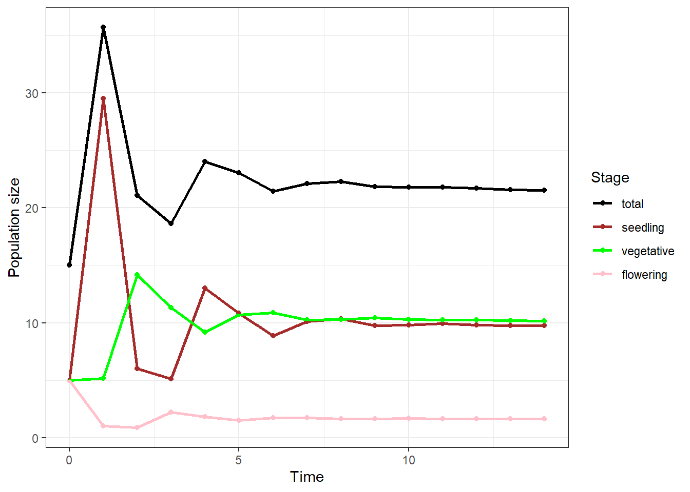
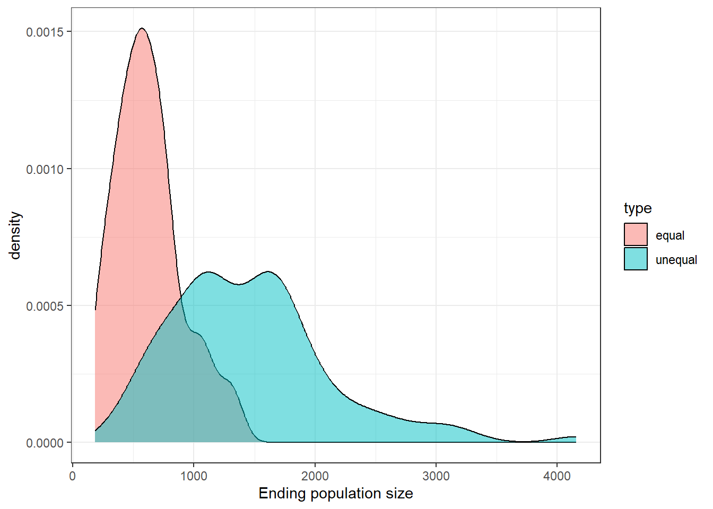

# make a matrix using nrow
m1 = matrix(c(1,2,3,4,5,6), nrow = 2)
m1
## [,1] [,2] [,3]
## [1,] 1 3 5
## [2,] 2 4 6
# make a matrix using ncol
m2 = matrix(c(1,2,3,4,5,6), ncol = 2)
m2
## [,1] [,2]
## [1,] 1 4
## [2,] 2 5
## [3,] 3 6
# make a matrix using nrow and by row
m3 = matrix(c(1,2,3,4,5,6), ncol = 2, byrow = T)
m3
## [,1] [,2]
## [1,] 1 2
## [2,] 3 4
## [3,] 5 6Workshop 6: Demographic matrix models
This workshop covers population demographic models.
R script: github
Matrix projection models
When modeling populations, not are life stages are equal. There can be drastic differences in survival or reproductive output depending on the life stage. Therefore, it is important to consider the demography when modeling the population. This can be done with matrices to model structured populations. These models use a transition (also called projection) matrix (\(A\)) that represents mathematically all of the stages and transitions between stages in the population. The population at time \(N_{t+1}\) can be found with the following formula that takes advantage of matrix multiplication: \[N_{t+1} = AN_t\]
Matrices in R
Another data structure that is useful in ecological uses of R are matrices. A matrix is made with the matrix() function with the basic syntax matrix(data = , nrow = , ncol = , byrow = , dimnames = ).
data = the input vector which becomes the data elements of the matrix.
nrow = the number of rows to be created.
ncol = the number of columns to be created.
byrow = FALSE if TRUE then the input vector elements are arranged by row.
dimname = the names assigned to the rows and columns.
Indexing
Matrices can be indexed in 2 ways
# make a matrix using ncol
m2 = matrix(c(1,2,3,4,5,6), ncol = 2)
m2
## [,1] [,2]
## [1,] 1 4
## [2,] 2 5
## [3,] 3 6
m2[1,2]
## [1] 4
m2[4]
## [1] 4
# make a matrix using nrow and by row
m3 = matrix(c(1,2,3,4,5,6), ncol = 2, byrow = T)
m3
## [,1] [,2]
## [1,] 1 2
## [2,] 3 4
## [3,] 5 6
m3[1,2]
## [1] 2
m3[4]
## [1] 2Matrix algebra
Matrix algebra can be done on matrices. There are specific matrix opperation like %*%, and functions like sum(),mean(), rowSums(), colSums(), rowMeans(), and colMeans() can be used to sum up entire matrices or specific rows or columns.
m2 = matrix(c(1,2,3,4,5,6), ncol = 3)
m2
## [,1] [,2] [,3]
## [1,] 1 3 5
## [2,] 2 4 6
m2 + 1
## [,1] [,2] [,3]
## [1,] 2 4 6
## [2,] 3 5 7
m2/3
## [,1] [,2] [,3]
## [1,] 0.3333333 1.000000 1.666667
## [2,] 0.6666667 1.333333 2.000000
m3 = matrix(c(1,2,3,4,5,6), ncol = 3, byrow = T)
m3
## [,1] [,2] [,3]
## [1,] 1 2 3
## [2,] 4 5 6
m2 + m3
## [,1] [,2] [,3]
## [1,] 2 5 8
## [2,] 6 9 12
m3 - m2
## [,1] [,2] [,3]
## [1,] 0 -1 -2
## [2,] 2 1 0
# multply matrix with vector
v = c(1,2,3)
m2*v
## [,1] [,2] [,3]
## [1,] 1 9 10
## [2,] 4 4 18
# matrix multiplication
m4 = matrix(c(1,2,3), ncol = 1)
m2 %*% m4
## [,1]
## [1,] 22
## [2,] 28
# functions with matrices
m2
## [,1] [,2] [,3]
## [1,] 1 3 5
## [2,] 2 4 6
sum(m2)
## [1] 21
mean(m2)
## [1] 3.5
rowSums(m2)
## [1] 9 12
rowMeans(m2)
## [1] 3 4
colSums(m2)
## [1] 3 7 11
colMeans(m2)
## [1] 1.5 3.5 5.5Random sampling of matrices
# sample matrices from list
m1 = matrix(c(4,3,2,1), ncol = 2)
m2 = matrix(c(1,2,3,4), ncol = 2)
m3 = matrix(c(1,2,3,4), ncol = 2, byrow = T)
m = list(m1, m2, m3)
sample(m, size = 4, replace = T)
## [[1]]
## [,1] [,2]
## [1,] 1 2
## [2,] 3 4
##
## [[2]]
## [,1] [,2]
## [1,] 1 2
## [2,] 3 4
##
## [[3]]
## [,1] [,2]
## [1,] 4 2
## [2,] 3 1
##
## [[4]]
## [,1] [,2]
## [1,] 1 2
## [2,] 3 4
sample(m, size = 4, replace = T, prob = c(0.8, 0.1, 0.1))
## [[1]]
## [,1] [,2]
## [1,] 4 2
## [2,] 3 1
##
## [[2]]
## [,1] [,2]
## [1,] 4 2
## [2,] 3 1
##
## [[3]]
## [,1] [,2]
## [1,] 4 2
## [2,] 3 1
##
## [[4]]
## [,1] [,2]
## [1,] 4 2
## [2,] 3 12 stage matrix model
The transition matrix (\(A\)) represents the growth, survival, and fecundity of each life stage. Here we use a simple two stage demographic model for a population with a distinct juvenile and adult stage (this can also represent seed and adult plant). The transition matrix can be represented as \[ A = \begin{bmatrix}
p_{11}&F_{12} \\
p_{21}&p_{22} \\
\end{bmatrix}\] where from time \(t\) to \(t + 1\)
- \(p_{11}\) is the probability juveniles survives and stays as a juvenile
- \(p_{21}\) is the probability juveniles survives and transitions to an adult
- \(p_{22}\) is the probability adults survives
- \(F_{12}\) is contribution of adults to juveniles (e.g. reproduction)
# setting up initial conditions
p11 = 0
p21 = 0.2
p22 = 0.8
F12 = 1.5
# set up transition matrix
A = matrix(c(p11, F12, p21, p22), byrow = T, ncol = 2)
A
## [,1] [,2]
## [1,] 0.0 1.5
## [2,] 0.2 0.8
# initial population conditions
juv = 50
ad = 100
#matrix of populations
p = matrix(c(juv, ad), ncol = 1)
p
## [,1]
## [1,] 50
## [2,] 100We can use for loops to simulate population dynamics
library(tidyverse)
## ── Attaching core tidyverse packages ──────────────────────── tidyverse 2.0.0 ──
## ✔ dplyr 1.1.4 ✔ readr 2.1.5
## ✔ forcats 1.0.0 ✔ stringr 1.5.1
## ✔ ggplot2 3.5.1 ✔ tibble 3.2.1
## ✔ lubridate 1.9.3 ✔ tidyr 1.3.1
## ✔ purrr 1.0.2
## ── Conflicts ────────────────────────────────────────── tidyverse_conflicts() ──
## ✖ dplyr::filter() masks stats::filter()
## ✖ dplyr::lag() masks stats::lag()
## ℹ Use the conflicted package (<http://conflicted.r-lib.org/>) to force all conflicts to become errors
# set conditions
years = 50
# place to store data
pop = tibble(time = 0:years,
Nt = NA,
juvs = NA,
adults = NA)
pop$Nt[pop$time == 0] = sum(p)
pop$juvs[pop$time == 0] = p[1]
pop$adults[pop$time == 0] = p[2]
pop
## # A tibble: 51 × 4
## time Nt juvs adults
## <int> <dbl> <dbl> <dbl>
## 1 0 150 50 100
## 2 1 NA NA NA
## 3 2 NA NA NA
## 4 3 NA NA NA
## 5 4 NA NA NA
## 6 5 NA NA NA
## 7 6 NA NA NA
## 8 7 NA NA NA
## 9 8 NA NA NA
## 10 9 NA NA NA
## # ℹ 41 more rows
for(i in 1:years){
p = A %*% p
pop$Nt[pop$time == i] = sum(p)
pop$juvs[pop$time == i] = p[1]
pop$adults[pop$time == i] = p[2]
}
df = pop %>%
pivot_longer(Nt:adults, names_to = 'stage', values_to = 'n') %>%
mutate(stage = factor(stage, levels = c('Nt','juvs','adults')))
ggplot(df, aes(time, n, color = stage)) +
geom_point() +
geom_line(linewidth = 1) +
labs(x = 'Time', y = 'Population size', color = 'Stage') +
scale_color_manual(values = c('black', 'red', 'blue'))+
theme_bw()
popbio
The package popbio was developed for estimating and analyzing demographic models. This package can be useful as these models become more complex with more life stages.
Constructing transition and fertility matrices (from popbio package info: Stubben & Brook. 2007. J Stats Soft)
The data are derived from a census - i.e., track fate of marked individuals and reproduction output. There are four main steps. It is recommended to use a long format to organized and structure your census data.
Step 1 - Create a stage-fate data frame
library(popbio)
data("test.census")
trans = full_join(test.census, test.census, by = 'plant',
relationship = "many-to-many") |>
filter(year.x == year.y -1) |>
rename(year = year.x, stage = stage.x, fruits = fruits.x,
year2 = year.y, fate = stage.y, fruits2 = fruits.y)
trans
## plant year stage fruits year2 fate fruits2
## 1 1 2001 seedling 0 2002 dead 0
## 2 2 2001 seedling 0 2002 vegetative 0
## 3 3 2001 seedling 0 2002 dead 0
## 4 4 2001 seedling 0 2002 dead 0
## 5 5 2001 seedling 0 2002 vegetative 0
## 6 6 2001 seedling 0 2002 vegetative 0
## 7 7 2001 vegetative 0 2002 reproductive 2
## 8 8 2001 vegetative 0 2002 vegetative 0
## 9 9 2001 reproductive 2 2002 dead 0
## 10 10 2001 reproductive 4 2002 reproductive 7
## 11 11 2001 reproductive 9 2002 reproductive 3
## 12 2 2002 vegetative 0 2003 vegetative 0
## 13 5 2002 vegetative 0 2003 dead 0
## 14 6 2002 vegetative 0 2003 vegetative 0
## 15 7 2002 reproductive 2 2003 vegetative 0
## 16 8 2002 vegetative 0 2003 dead 0
## 17 10 2002 reproductive 7 2003 dead 0
## 18 11 2002 reproductive 3 2003 dead 0
## 19 12 2002 seedling 0 2003 dead 0
## 20 13 2002 seedling 0 2003 dead 0
## 21 14 2002 seedling 0 2003 dead 0
## 22 15 2002 seedling 0 2003 vegetative 0
## 23 16 2002 seedling 0 2003 dead 0Step 2 - Adding fertility using relative values (blind/anynymous reproduction)
seedlings = test.census |>
filter(year == 2002, stage == 'seedling') |>
nrow()
seedlings
## [1] 5
trans01 = trans |>
filter(year == 2001) |>
select(plant, stage, fruits, fate) |>
mutate(seedling = fruits/sum(fruits)*seedlings)
trans01
## plant stage fruits fate seedling
## 1 1 seedling 0 dead 0.0000000
## 2 2 seedling 0 vegetative 0.0000000
## 3 3 seedling 0 dead 0.0000000
## 4 4 seedling 0 dead 0.0000000
## 5 5 seedling 0 vegetative 0.0000000
## 6 6 seedling 0 vegetative 0.0000000
## 7 7 vegetative 0 reproductive 0.0000000
## 8 8 vegetative 0 vegetative 0.0000000
## 9 9 reproductive 2 dead 0.6666667
## 10 10 reproductive 4 reproductive 1.3333333
## 11 11 reproductive 9 reproductive 3.0000000Step 3 - Creating projection matrix A = T + F
#Using popbio to construct projection matrix from transition and fertility matrices
stages = c("seedling", "vegetative", "reproductive")
projection.matrix(trans01, sort = stages)
##
## seedling vegetative reproductive
## seedling 0.0000000 0.0000000 1.6666667
## vegetative 0.5000000 0.5000000 0.0000000
## reproductive 0.0000000 0.5000000 0.6666667
trans01 = trans01 |>
mutate(stage = ordered(stage, levels = stages))
projection.matrix(trans01, TF = TRUE)
## $T
##
## seedling vegetative reproductive
## seedling 0.0000000 0.0000000 0.0000000
## vegetative 0.5000000 0.5000000 0.0000000
## reproductive 0.0000000 0.5000000 0.6666667
##
## $F
##
## seedling vegetative reproductive
## seedling 0.000000 0.000000 1.666667
## vegetative 0.000000 0.000000 0.000000
## reproductive 0.000000 0.000000 0.000000Step 4 - Adding other information not included in the census
data('aq.trans')
#subset for 1996
aq96 = aq.trans |>
filter(year == 1996) |>
select(plot, plant,stage, fate, fruits)
# measured metrics
seed.survival = 0.126
seed.bank.size = 10000
seeds.per.fruit = 120
#calculate metrics
recruits = test.census |>
filter(year == 1997, stage == 'recruits') |>
nrow()
seeds.from.plants = sum(aq96$fruits) * seeds.per.fruit
recruitment.rate = recruits/(seed.bank.size + seeds.from.plants)
#calculate recruits and seeds
aq96 = aq96 |>
mutate(recruit = fruits/sum(fruits) * seeds.from.plants * recruitment.rate,
seed = fruits * seeds.per.fruit * seed.survival)
aq96
## plot plant stage fate fruits recruit seed
## 1 903 1 small small 0 0 0.00
## 2 903 2 flower large 1 0 15.12
## 3 903 3 small large 0 0 0.00
## 4 903 4 small small 0 0 0.00
## 5 903 7 small large 0 0 0.00
## 6 903 8 small large 0 0 0.00
## 7 903 10 small dead 0 0 0.00
## 8 903 11 flower large 1 0 15.12
## 9 903 14 small large 0 0 0.00
## 10 903 15 small dead 0 0 0.00
## 11 903 21 small dead 0 0 0.00
## 12 903 23 small small 0 0 0.00
## 13 903 28 small large 0 0 0.00
## 14 903 29 flower large 1 0 15.12
## 15 903 30 small large 0 0 0.00
## 16 903 33 small dead 0 0 0.00
## 17 903 35 small large 0 0 0.00
## 91 906 1 small small 0 0 0.00
## 92 906 8 flower large 10 0 151.20
## 93 906 11 small dead 0 0 0.00
## 94 906 12 recruit dead 0 0 0.00
## 95 906 13 recruit dead 0 0 0.00
## 96 906 14 recruit small 0 0 0.00
## 97 906 15 recruit small 0 0 0.00
## 98 906 16 recruit dead 0 0 0.00
## 99 906 17 recruit small 0 0 0.00
## 100 906 19 flower large 6 0 90.72
## 101 906 21 flower large 10 0 151.20
## 102 906 22 small small 0 0 0.00
## 137 909 1 small large 0 0 0.00
## 138 909 2 small small 0 0 0.00
## 139 909 4 small large 0 0 0.00
## 140 909 8 small large 0 0 0.00
## 141 909 9 flower large 1 0 15.12
## 142 909 10 small dead 0 0 0.00
## 143 909 13 flower dead 1 0 15.12
## 144 909 14 flower large 1 0 15.12
## 145 909 15 small dead 0 0 0.00
## 146 909 18 small large 0 0 0.00
## 147 909 19 flower large 0 0 0.00
## 148 909 23 small large 0 0 0.00
## 149 909 24 small large 0 0 0.00
## 150 909 28 small large 0 0 0.00
## 151 909 30 flower large 1 0 15.12
## 152 909 31 small dead 0 0 0.00
## 153 909 32 small dead 0 0 0.00
## 154 909 36 small dead 0 0 0.00
## 155 909 38 small dead 0 0 0.00
## 156 909 39 flower large 4 0 60.48
## 157 909 46 small small 0 0 0.00
## 158 909 48 small large 0 0 0.00
## 159 909 49 small dead 0 0 0.00
## 160 909 50 small small 0 0 0.00
## 161 909 51 small large 0 0 0.00
## 162 909 59 small large 0 0 0.00
## 163 909 61 small large 0 0 0.00
## 164 909 62 small dead 0 0 0.00
## 286 913 3 flower large 0 0 0.00
## 287 913 4 large large 0 0 0.00
## 288 913 6 small dead 0 0 0.00
## 289 913 12 large small 0 0 0.00
## 290 913 16 small small 0 0 0.00
## 291 913 23 large large 0 0 0.00
## 292 913 24 small small 0 0 0.00
## 293 913 25 small small 0 0 0.00
## 417 914 1 recruit dead 0 0 0.00
## 418 914 2 large dead 0 0 0.00
## 419 914 3 small dead 0 0 0.00
## 420 914 4 large dead 0 0 0.00
## 421 914 5 small dead 0 0 0.00
## 422 914 7 small dead 0 0 0.00
## 423 914 8 small dead 0 0 0.00
## 424 914 9 small dead 0 0 0.00
## 425 914 10 small small 0 0 0.00
## 426 914 12 small small 0 0 0.00
## 427 914 14 flower large 3 0 45.36
## 428 914 16 flower dead 1 0 15.12
## 429 914 17 small small 0 0 0.00
## 430 914 18 flower flower 5 0 75.60
## 431 914 20 flower dead 2 0 30.24
## 432 914 21 flower large 3 0 45.36
## 433 914 22 small small 0 0 0.00
## 434 914 26 flower large 1 0 15.12
## 435 914 27 small small 0 0 0.00
## 436 914 28 small small 0 0 0.00
## 437 914 29 flower flower 1 0 15.12
## 438 914 30 small dead 0 0 0.00
## 439 914 31 small small 0 0 0.00
## 440 914 32 large dead 0 0 0.00
## 441 914 33 recruit dead 0 0 0.00
## 442 914 34 recruit small 0 0 0.00
## 443 914 35 recruit dead 0 0 0.00
## 444 914 36 recruit small 0 0 0.00
## 445 914 37 small dead 0 0 0.00
## 446 914 38 small large 0 0 0.00
## 447 914 39 large large 0 0 0.00
## 448 914 40 flower large 6 0 90.72
## 449 914 41 flower flower 0 0 0.00
## 450 914 43 large large 0 0 0.00
## 451 914 44 small small 0 0 0.00
## 452 914 99 large flower 0 0 0.00
## 579 916 1 large large 0 0 0.00
## 580 916 3 small large 0 0 0.00
## 581 916 4 small large 0 0 0.00
## 582 916 6 small small 0 0 0.00
## 583 916 9 small large 0 0 0.00
## 584 916 17 small small 0 0 0.00
## 585 916 18 small small 0 0 0.00
## 586 916 19 flower large 2 0 30.24
## 587 916 27 small large 0 0 0.00
## 588 916 33 recruit small 0 0 0.00
## 589 916 39 flower large 1 0 15.12
## 590 916 49 flower large 3 0 45.36
## 591 916 51 small large 0 0 0.00
## 662 921 1 large small 0 0 0.00
## 663 921 2 small small 0 0 0.00
## 664 921 4 flower dead 0 0 0.00
## 665 921 5 flower small 0 0 0.00
## 666 921 6 flower dead 0 0 0.00
## 691 923 1 small small 0 0 0.00
## 692 923 4 flower small 1 0 15.12
## 693 923 5 flower small 1 0 15.12
## 694 923 7 flower small 3 0 45.36
## 695 923 10 flower small 3 0 45.36
## 696 923 11 small small 0 0 0.00
## 697 923 12 flower small 1 0 15.12
## 698 923 14 large large 0 0 0.00
## 699 923 17 small dead 0 0 0.00
## 700 923 19 flower small 3 0 45.36
## 701 923 20 flower small 2 0 30.24
## 702 923 23 small dead 0 0 0.00
## 703 923 25 small small 0 0 0.00
## 704 923 26 small dead 0 0 0.00
## 705 923 28 flower flower 1 0 15.12
## 706 923 29 small dead 0 0 0.00
## 707 923 30 small small 0 0 0.00
## 708 923 31 small dead 0 0 0.00
## 709 923 32 small small 0 0 0.00
## 710 923 33 small small 0 0 0.00
## 711 923 35 small dead 0 0 0.00
## 712 923 36 small small 0 0 0.00
## 713 923 38 small small 0 0 0.00
## 714 923 43 small dead 0 0 0.00
## 715 923 44 flower small 2 0 30.24
## 716 923 46 flower small 2 0 30.24
## 717 923 49 small dead 0 0 0.00
## 718 923 50 small dead 0 0 0.00
## 719 923 52 small dead 0 0 0.00
## 720 923 53 flower small 1 0 15.12
## 721 923 61 flower small 1 0 15.12
## 722 923 62 small dead 0 0 0.00
## 723 923 63 small small 0 0 0.00
## 724 923 64 small dead 0 0 0.00
## 725 923 71 large flower 0 0 0.00
## 726 923 76 flower large 3 0 45.36
## 727 923 77 small dead 0 0 0.00
## 728 923 78 large dead 0 0 0.00
## 729 923 79 small dead 0 0 0.00
## 730 923 80 small dead 0 0 0.00
## 731 923 81 flower large 2 0 30.24
## 732 923 82 small small 0 0 0.00
## 733 923 83 small dead 0 0 0.00
## 734 923 150 small small 0 0 0.00
## 735 923 165 flower large 19 0 287.28
## 736 923 168 small large 0 0 0.00
## 737 923 173 small large 0 0 0.00
## 953 929 1 small dead 0 0 0.00
## 954 929 3 flower large 9 0 136.08
## 955 929 4 large large 0 0 0.00
## 956 929 5 small small 0 0 0.00
## 957 929 7 flower dead 2 0 30.24
## 958 929 8 flower large 7 0 105.84
## 959 929 9 small large 0 0 0.00
## 960 929 11 small small 0 0 0.00
## 961 929 13 flower large 1 0 15.12
## 962 929 14 small dead 0 0 0.00
## 963 929 15 small dead 0 0 0.00
## 964 929 18 small dead 0 0 0.00
## 965 929 22 flower large 2 0 30.24
## 966 929 24 small large 0 0 0.00
## 967 929 32 small dead 0 0 0.00
## 968 929 33 small large 0 0 0.00
## 969 929 38 flower large 20 0 302.40
## 970 929 40 flower large 3 0 45.36
## 971 929 42 flower large 2 0 30.24
## 972 929 43 small large 0 0 0.00
## 973 929 44 flower large 1 0 15.12
## 974 929 45 flower flower 4 0 60.48
## 975 929 46 small large 0 0 0.00
## 976 929 47 small large 0 0 0.00
## 1297 930 2 small dead 0 0 0.00
## 1298 930 3 small dead 0 0 0.00
## 1299 930 19 small small 0 0 0.00
## 1300 930 26 small small 0 0 0.00
## 1301 930 27 small small 0 0 0.00
## 1302 930 28 small small 0 0 0.00
## 1303 930 30 flower small 1 0 15.12
## 1304 930 36 flower small 1 0 15.12
## 1305 930 37 small small 0 0 0.00
## 1306 930 39 flower small 1 0 15.12
## 1307 930 46 flower small 14 0 211.68
## 1308 930 47 small small 0 0 0.00
## 1309 930 69 flower dead 4 0 60.48
## 1310 930 70 small small 0 0 0.00
## 1311 930 73 small small 0 0 0.00
## 1312 930 75 large small 0 0 0.00
## 1313 930 79 small small 0 0 0.00
## 1314 930 80 flower small 5 0 75.60
## 1315 930 81 flower small 2 0 30.24
## 1316 930 83 small dead 0 0 0.00
## 1317 930 84 small small 0 0 0.00
## 1318 930 85 small small 0 0 0.00
## 1319 930 86 small small 0 0 0.00
## 1320 930 87 small dead 0 0 0.00
## 1321 930 88 small small 0 0 0.00
## 1322 930 91 small dead 0 0 0.00
## 1323 930 92 flower dead 3 0 45.36
## 1324 930 93 small dead 0 0 0.00
## 1325 930 94 small small 0 0 0.00
## 1326 930 95 small small 0 0 0.00
## 1327 930 98 large large 0 0 0.00
## 1328 930 103 small small 0 0 0.00
## 1329 930 104 small small 0 0 0.00
## 1330 930 105 small small 0 0 0.00
## 1331 930 106 flower small 5 0 75.60
# matrix
projection.matrix(aq96, add = c(1, 1, seed.survival,2, 1, recruitment.rate))
##
## seed recruit small large flower
## seed 0.12600000 0.00000000 0.00000000 0.00000000 48.04258065
## recruit 0.00000000 0.00000000 0.00000000 0.00000000 0.00000000
## small 0.00000000 0.50000000 0.40298507 0.17647059 0.30645161
## large 0.00000000 0.00000000 0.23880597 0.47058824 0.48387097
## flower 0.00000000 0.00000000 0.00000000 0.11764706 0.08064516pop.projection()
popbio::pop.projection() can be used to project population change and returns list of information about the model.
- lambda - estimate of lambda using change between the last two population counts
- stable.stage - estimate of stable stage distribution using proportions in last stage vector
- stage.vector - A matrix with the number of projected individuals in each stage class
- pop.sizes - total number of projected individuals
- pop.changes - proportional change in populations size
For more information about calculating \(\lambda\) and stable stage you can refer to Chapter 4 of Steven’s Primer of Ecology using R or Chapter 3 of Gotelli’s A primer of Ecology.
stages = c("seedling", "vegetative", "flowering")
# create projection matrix
A = matrix(c(0, 0, 5.905, 0.368, 0.639, 0.025, 0.001, 0.152, 0.051),
nrow = 3, byrow = TRUE, dimnames = list(stages, stages))
# Initial vector of population sizes across stages
n = c(5, 5, 5)
# run model
p = pop.projection(A = A, n = n, iterations = 15)
p
## $lambda
## [1] 0.9969892
##
## $stable.stage
## seedling vegetative flowering
## 0.45252933 0.47113978 0.07633089
##
## $stage.vectors
## 0 1 2 3 4 5 6 7
## seedling 5 29.525 6.023100 5.112933 13.030853 10.841000 8.851612 10.114475
## vegetative 5 5.160 14.187940 11.304241 9.160138 10.694580 10.860800 10.240266
## flowering 5 1.020 0.865865 2.206749 1.835902 1.499003 1.712866 1.747049
## 8 9 10 11 12 13
## seedling 10.316326 9.777111 9.812795 9.915667 9.809763 9.745986
## vegetative 10.309333 10.425465 10.301394 10.235679 10.231096 10.188925
## flowering 1.655734 1.661777 1.679198 1.661264 1.650463 1.649110
## 14
## seedling 9.737995
## vegetative 10.138473
## flowering 1.642567
##
## $pop.sizes
## [1] 15.00000 35.70500 21.07691 18.62392 24.02689 23.03458 21.42528 22.10179
## [9] 22.28139 21.86435 21.79339 21.81261 21.69132 21.58402 21.51904
##
## $pop.changes
## [1] 2.3803333 0.5903068 0.8836175 1.2901091 0.9587000 0.9301353 1.0315755
## [8] 1.0081262 0.9812831 0.9967542 1.0008820 0.9944395 0.9950533 0.9969892
stage.vector.plot(p$stage.vectors)
Plot using ggplot
pp = tibble(time = as.numeric(colnames(p$stage.vectors)),
seedling = p$stage.vectors[1,],
vegetative = p$stage.vectors[2,],
flowering = p$stage.vectors[3,],
total = p$pop.sizes) %>%
pivot_longer(seedling:total, names_to = 'stage', values_to = 'n') %>%
mutate(stage = factor(stage,
levels =c('total','seedling','vegetative','flowering')))
ggplot(pp, aes(time, n, color = stage)) +
geom_point() +
geom_line(size = 1) +
labs(x = 'Time', y = 'Population size', color = 'Stage') +
scale_color_manual(values = c('black', 'brown', 'green', 'pink'))+
theme_bw()
## Warning: Using `size` aesthetic for lines was deprecated in ggplot2 3.4.0.
## ℹ Please use `linewidth` instead.
population variability and stochastic growth
The stoch.projection() function came be used to project stochastic growth using whole matrix selection techniques in an independently and identically distributed (iid) environment from a set of two or more projection matrices. Returns a matrix listing final population sizes by stage class.
#install.packages(popdemo)
library(popdemo)
## Welcome to popdemo! This is version 1.3-0
## Use ?popdemo for an intro, or browseVignettes('popdemo') for vignettes
## Citation for popdemo is here: doi.org/10.1111/j.2041-210X.2012.00222.x
## Development and legacy versions are here: github.com/iainmstott/popdemo
data("hudsonia")
hudsonia
## $A85
## seed seedlings tiny small medium large
## seed 0.4995 0.0000 4.5782 12.1425 22.3167 50.1895
## seedlings 0.0004 0.0000 0.0039 0.0102 0.0188 0.0423
## tiny 0.0000 0.4773 0.7059 0.1294 0.0831 0.0000
## small 0.0000 0.0000 0.1345 0.4530 0.2079 0.2000
## medium 0.0000 0.0000 0.0000 0.3235 0.6238 0.2000
## large 0.0000 0.0000 0.0000 0.0647 0.0831 0.6000
##
## $A86
## seed seedlings tiny small medium large
## seed 0.4995 0.0000 4.5782 12.1425 22.3167 50.1895
## seedlings 0.0004 0.0000 0.0039 0.0102 0.0188 0.0423
## tiny 0.0000 0.4773 0.4995 0.2178 0.0493 0.0000
## small 0.0000 0.0000 0.2913 0.4356 0.1480 0.0000
## medium 0.0000 0.0000 0.0000 0.2722 0.4440 0.0000
## large 0.0000 0.0000 0.0000 0.0000 0.3454 0.9994
##
## $A87
## seed seedlings tiny small medium large
## seed 0.4995 0.0000 4.4234 11.7319 21.5620 48.4923
## seedlings 0.0003 0.0000 0.0028 0.0073 0.0135 0.0303
## tiny 0.0000 0.4545 0.4575 0.3079 0.1425 0.0000
## small 0.0000 0.0000 0.1144 0.5544 0.1425 0.0769
## medium 0.0000 0.0000 0.0000 0.0616 0.4985 0.3846
## large 0.0000 0.0000 0.0000 0.0000 0.2137 0.5385
##
## $A88
## seed seedlings tiny small medium large
## seed 0.4995 0.0 4.7330 12.5531 23.0714 51.8867
## seedlings 0.0003 0.0 0.0028 0.0075 0.0137 0.0308
## tiny 0.0000 0.5 0.7331 0.1428 0.0000 0.0000
## small 0.0000 0.0 0.2200 0.4286 0.0000 0.0000
## medium 0.0000 0.0 0.0000 0.4286 0.6154 0.1000
## large 0.0000 0.0 0.0000 0.0000 0.3846 0.9000
# starting population size
n = c(4264, 3, 30, 16, 25, 5)
names(n) = c("seed", "seedlings", "tiny", "small", "medium","large")
# projection with equal probabilities
x.eq = stoch.projection(matrices = hudsonia, n0 = n, nreps = 100) %>%
as_tibble() %>%
mutate(rep = row_number(),
total = seed + seedlings + tiny + small + medium + large,
type = 'equal')
x.eq
## # A tibble: 100 × 9
## seed seedlings tiny small medium large rep total type
## <dbl> <dbl> <dbl> <dbl> <dbl> <dbl> <int> <dbl> <chr>
## 1 1068. 0.877 2.90 3.81 5.21 5.04 1 1086. equal
## 2 718. 0.429 3.10 2.18 3.95 5.36 2 733. equal
## 3 555. 0.332 1.29 0.835 2.52 3.93 3 564. equal
## 4 237. 0.195 1.05 1.11 1.52 1.06 4 242. equal
## 5 580. 0.346 3.50 2.36 4.53 3.55 5 594. equal
## 6 266. 0.159 0.748 0.478 0.905 2.18 6 271. equal
## 7 1248. 1.03 2.07 3.35 3.91 6.80 7 1265. equal
## 8 646. 0.386 1.76 1.13 2.19 5.45 8 657. equal
## 9 511. 0.313 2.12 1.81 2.85 2.39 9 521. equal
## 10 461. 0.379 2.06 2.28 2.57 2.11 10 470. equal
## # ℹ 90 more rows
# unequal probabilities for projection matrices
x.uneq = stoch.projection(matrices = hudsonia, n0 = n, nreps = 100, prob = c(0.2, 0.2, 0.2, 0.4))%>%
as_tibble() %>%
mutate(rep = row_number(),
total = seed + seedlings + tiny + small + medium + large,
type = 'unequal')
x.uneq
## # A tibble: 100 × 9
## seed seedlings tiny small medium large rep total type
## <dbl> <dbl> <dbl> <dbl> <dbl> <dbl> <int> <dbl> <chr>
## 1 630. 0.376 1.67 0.902 2.47 5.35 1 641. unequal
## 2 713. 0.426 2.64 1.49 3.73 5.61 2 727. unequal
## 3 464. 0.283 2.81 2.40 2.23 1.61 3 473. unequal
## 4 376. 0.310 0.596 0.473 0.309 3.65 4 382. unequal
## 5 1170. 0.963 3.89 4.56 6.31 5.85 5 1191. unequal
## 6 1126. 0.688 6.03 5.41 5.92 4.10 6 1148. unequal
## 7 2366. 1.95 5.57 5.41 6.05 22.1 7 2407. unequal
## 8 687. 0.563 2.14 2.67 3.77 2.78 8 699. unequal
## 9 1706. 1.02 4.96 3.75 9.63 10.9 9 1736. unequal
## 10 1324. 1.09 3.53 4.94 5.56 7.34 10 1347. unequal
## # ℹ 90 more rows
pop2 = bind_rows(x.eq,x.uneq)
ggplot(pop2, aes(total, fill = type)) +
geom_density(alpha = 0.5) +
labs(x = 'Ending population size', color = NULL) +
theme_bw()
Exercises
Create a transition matrix for a 2 stage population where the the probability of stage 1 survival and stays in stage 1 = 0, the probability of survival of stage 1 and transition to stage 2 = 0.1, the survival of stage 2 = 0.8, and contribution of stage 2 to stage 1 = 2.
Use the transition matrix from exercise 1 to simulate 50 years of a population with a starting population of 50 individuals in stage 1 and 25 individuals in stage 2. Plot the results.
Challenge: Using the 3 matrices below. Simulate the same population above. Use a probability of 0.5 for average year, 0.3 for poor year, and 0.2 for good year. Plot your results
\[ average = \begin{bmatrix} 0&2 \\ 0.1&0.8 \end{bmatrix}\] \[ poor = \begin{bmatrix} 0&1 \\ 0.1&0.6 \end{bmatrix}\]
\[ good = \begin{bmatrix} 0&3 \\ 0.1&0.8 \end{bmatrix}\]